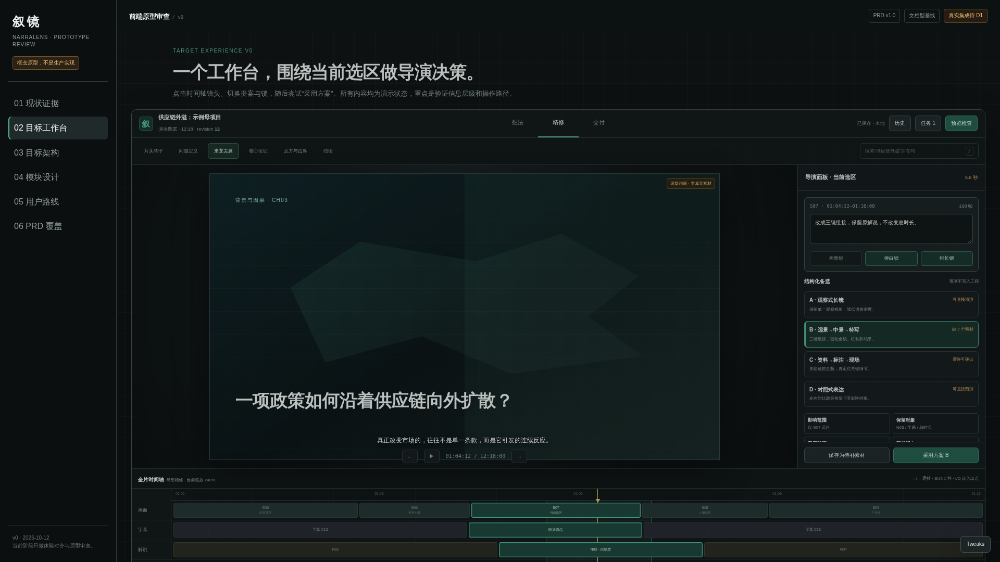

当前事实基线项目说明型页面；没有生产工作台源码。
这是 V0 获批后的 V1 阶段性前端优化：固定三阶段信息架构，细化真实工作台、失败状态与出门门限。所有真实工程能力仍等待 D1 证据。
保留 V0 的导演工作台方向，补齐想法与交付两端、组件责任、异常恢复和可测量门限。

切换“想法 / 精修 / 交付”，再用状态模拟器检查缺素材、版本冲突、锁冲突与写入失败。布局变体用于评审，不代表要同时交付三套产品。
用生活价格切入，提出“变化从哪里开始”。
港口 → 运价 → 库存 → 终端价格。
WorkbenchState 只存选区、草稿和乐观状态；最终时间轴不复制到前端。图中的实体均是 V1 目标，Hypit 对接方式须由 D1 验证。
这些状态必须进入组件契约和端到端测试，不能等联调时临时补 toast。
| 状态 | 必须说明 | 恢复动作 | 禁止 |
|---|---|---|---|
| 生成中 | 排队 / 研究 / 生成 / 校验 / 写入 / 渲染 | 请求取消、查看任务 | 假百分比 |
| 409 版本冲突 | base 与 current revision，草稿已保留 | 重新定位或生成 | 覆盖新版 |
| 422 缺素材 | 具体方案与缺失对象 | 保存待补或替换 | 标成可导出 |
| 423 锁冲突 | 画面 / 旁白 / 时长哪项锁定 | 解锁或保留 | 只说操作失败 |
| 428 需审批 | 外传对象、费用、提供方 | 批准或拒绝 | 自动付费/外传 |
| 503 不可用 | 服务状态、草稿未丢 | 手工编辑或重试 | 阻塞整个工作台 |
| 写入失败 | 主 Source 未变、上次成功输出 | 重试指定阶段 | 展示成功状态 |
当前只申请 Gate P。D1 和 V1 都需要真实工程与自动化证据，原型演示不能替代。